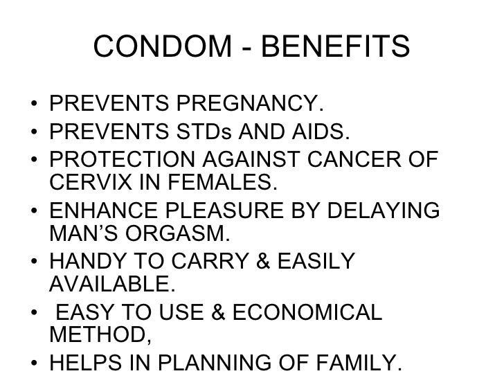

As you can see in the image below, these are some of the benefits to Safe sex. Proceed past that to find out more.

You need to keep yourself educated on the benefits of safe sex.
The benefits from practicing safe sex can keep you and your partner safe. You aren't having unplanned kids. You aren't catching any diseases. Having that protection will help plan out things much more better than without the protection.